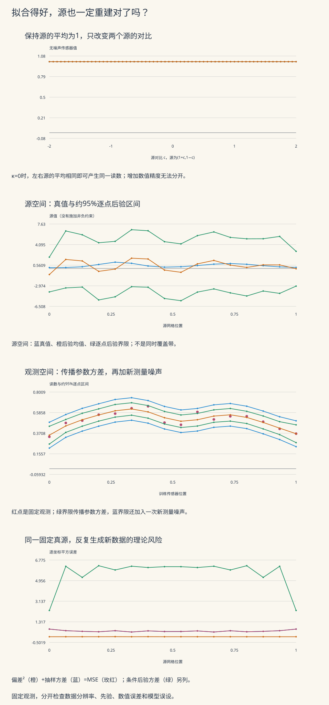

本页目录
计算物理 V · 逆问题与不确定度量化
本页问题：一组传感器读数可以拟合得很好，为什么隐藏的源仍可能重建得很差？怎样分清数据、先验和误差条各自告诉了我们什么？
前置：测量与不确定度、线性代数的正交基与二次型、Gaussian分布和Bayes公式。先用两个源算清可辨识性，再进入16个源的实际平滑反演与独立预测。
学习层：先固定观测，再改变你的解释
两个温度计都只读平均值，就分不清“左热右冷”与“左冷右热”
想象两个隐藏源的强度为 \((2,0)\) 或 \((0,2)\)。如果每个传感器都只看二者的平均，它们都会读到1。增加小数位、换一个线性求解器，都不能补上这项缺失的测量。
如果传感器能看见一点点左右差别，问题从“完全不可辨识”变成“容易放大噪声”。正则化可以稳定答案，却也会把先验选择带进结果。必须把这两件事一起呈现。
| 实验模式 | 可以直接核对什么 | 需要保留的区别 |
|---|---|---|
| 两个源 | 已知奇异方向与真正的零空间 | 不可辨识与数值舍入 |
| 16源反演 | 源、观测、三种区间及成对后验复制 | 参数区间与新观测预测 |
| 重复实验风险 | 固定真源下的偏差²、抽样方差和MSE | 条件后验方差与重复实验误差 |
无JavaScript也能核对。 默认16源模型的真实核宽度和假设核宽度均为0.14，数据噪声与假设噪声均为0.05，正则化强度为0.03，使用一阶差分加0.001倍单位矩阵的先验精度形状。固定seed为20260911，生成64对后验源与复制观测。
| 量 | 默认数值 |
|---|---|
| 数据残差范数 | 0.134249178907 |
| 完整R惩罚平方范数 | 21.2967813687 |
| 目标函数值 | 7.84804025593 |
| 本次源重建MSE | 0.724114146598 |
| 重复实验平均偏差平方 | 0.00146529709241 |
| 重复实验平均抽样方差 | 0.504871662329 |
| 重复实验MSE | 0.506336959421 |
| 平均条件后验方差 | 5.56177922293 |
| 训练观测落在预测区间内的个数/16 | 16 |
| 留出观测落在预测区间内的个数/15 | 14 |
| 复制偏差不小于观测偏差的次数/64 | 32 |
| PPC经验比例 | 0.5 |
| 解析观测偏差期望 | 0.957696104376 |
| 理想复制偏差期望 | 1 |
| 实际均匀数调用数 | 4158 |
| 最终LCG状态 | 976293493 |
改变推断时假设的噪声、先验或正则化，已有观测不会跟着移动。表里的PPC比例是一次有限伪随机计算；即使某次所有复制都在同一侧，也不能断言理想概率恰为0或1。

图中区间均为约95%的逐点Gaussian区间，不表示整条源曲线有95%的同时覆盖率。不同坐标的后验误差通常相关，完整协方差矩阵保留在实验账本中。
1. 两个源就能看见真正的不可辨识性
考虑前向矩阵
取两个单位正交向量
直接相乘得到 \(K_\kappa q_+=q_+\)、\(K_\kappa q_-=\kappa q_-\)。因此同向模式完整通过，反向模式只传输比例 \(\kappa\)；两个奇异值就是1与 \(\kappa\)。
令 \(\theta_\pm=q_\pm^Tx\)、\(z_\pm=q_\pm^Ty\)。理想白噪声在正交变换后仍是同方差独立Gaussian，所以
当 \(\kappa>0\)，直接反演的反向误差是 \(\epsilon_-/\kappa\)。传输越弱，噪声增益越大。\(\kappa=0\) 时，反向观测只剩噪声，根本不含 \(\theta_-\) 的信息。
这里的零空间是 \(\operatorname{span}\{q_-\}\)。最小二乘解不唯一；伪逆给出的最小范数解只是在所有解中选择反向系数为0，并没有证明真实反向系数就是0。实验的65个无噪声源 \((1+c,1-c)\) 在 \(\kappa=0\) 时全部产生读数 \((1,1)\)。
2. 加入先验后，唯一答案从哪里来
两源模式使用
在任一奇异方向上，记传输为 \(a\)、观测为 \(z\)、先验均值为 \(\theta_0\)，完成平方可得
均值对观测的增益与对真信号的分辨因子分别为
当 \(a=0\)，
数据在这个方向既没有移动均值，也没有压缩先验方差。实验允许单独改变“先验对比”，此时预测读数不变，后验源却跟着变。这正好显示：一个数学上唯一、数值上稳定的后验均值，仍可能在某些方向主要来自先验。
3. 16源模型：数据生成与推断假设分开
源网格位于 \(s_j=j/15\)，训练传感器也取这16个位置。宽度为 \(w\) 的前向平滑模型定义为
每行和为1，所以常数源仍给出同一常数读数。它是有限传感器的归一化平滑模型，边缘处重新归一化；不是某个给定边界条件热方程的精确Green函数，也不是Gaussian过程的“协方差核”。
模拟数据先由真实设置生成：
推断再采用自己的假设：
固定seed、真实核宽度与 \(\sigma_{\rm data}\) 后，更改 \(\sigma_{\rm fit}\)、假设核宽度或 \(\lambda\) 都不改变已有数据。这样才能研究“低估噪声”或“写错仪器分辨率”的后果，而不是边改模型边重造实验。
真实源采用固定的两峰测试函数。在真实实验中一般不知道 \(x_{\rm true}\)，因此源MSE只在这个模拟基准中可计算，不能从训练残差中直接读出来。
4. 一般Tikhonov问题与非零先验均值
设先验精度形状为正定矩阵 \(R\)，先验均值为 \(m_0\)：
本页16源模式用
\(D\) 可以是单位矩阵、一阶相邻差或二阶差。这里是固定网格上的差分惩罚，没有把它偷换成与网格无关的连续导数范数。小的正对角项使常数方向也有适当先验；零阶模式的 \(R\) 实际为 \(1.001I\)。
令
一阶条件给出
这只是数学表达式；实现不必显式形成逆矩阵再乘右端。\(D\) 和 \(K\) 一般也不能同时对角化，所以不能把两源的逐模式分式无条件套到任意平滑先验上。
5. 为什么后验协方差是同一个精度矩阵的逆
Gaussian先验为
与似然相乘并完成平方：
在线性Gaussian条件下，均值恰好也是MAP。一般非线性或非Gaussian模型没有这个保证。线性Bayes推导也可参看 Rasmussen与Williams §2.1。
若改写成未除噪声方差的矩阵
则 \(\Sigma=\sigma_{\rm fit}^2H^{-1}\)，不能漏掉前面的噪声方差。缩放正规方程可以不改变均值，却会改变协方差的含义和单位。
这里的 \(\Sigma\) 条件于固定的 \(\lambda\)、噪声和核宽度。若这些超参数也不确定，就还需要对它们积分；只画固定超参数区间通常没有包括全部模型不确定度。无限维函数空间中的Bayesian正则化还需考虑先验与离散化的一致性，可从 Stuart讲义继续学习。
6. 参数、无噪声响应、新读数：三种不同区间
参数第 \(j\) 个分量的约95%逐点后验区间为
将参数传播到传感器空间：
新测量还要加上独立的新噪声：
因此同一传感器处，新读数区间比无噪声响应区间更宽。参数空间与观测空间则可能有不同单位与尺度，不能直接比较哪一种“总体更宽”。
多个逐点95%区间也不是整个向量的95%同时区域。后验分量相关，整条曲线的覆盖概率不能由一个点的概率替代。实验保留完整协方差，并明确只把图线称作逐点界限。
Gaussian模型允许负源强度。这对相对背景的扰动量可能合理；若未知量是必须非负的绝对浓度或绝对温度，应加入相应约束或换参数化，此时Gaussian后验公式往往不再直接成立。把负值在绘图时剪到0不是一种正确的约束推断。
7. 求解方式也要能核对
若 \(R=CC^T\)，令 \(u=x-m_0\)，正则化问题等价于
使用增广矩阵的薄QR分解 \(\mathcal A=QU\)，其中 \(Q^TQ=I\)、\(U\) 为上三角矩阵：
实验用Householder反射执行QR，逐项保留增广矩阵、每个反射向量、\(Q^T\)、\(U\)、右端和协方差。由此可以核对
避免直接用正规方程求均值，是因为形成 \(\mathcal A^T\mathcal A\) 会把条件数平方；在弱正则化边界，舍入误差可能因此放大。但数值方法改进仍不能修复真正的零空间或写错的前向模型。
这些等式在程序中以浮点数核对，并不是严格区间证书。两源模式同时给出解析后验与QR结果，恰好可以用来区分数学参考与数值实现。
8. 条件后验方差不等于重复实验方差
令
现在固定真实源 \(x_\star\)，反复生成新的理想数据
估计量的期望与抽样协方差是
记偏差 \(b_x=\mathbb E_y\widehat x-x_\star\)，平均每个源坐标的MSE为
这里的随机对象是反复生成的数据；Bayesian后验则是在已经观察到 \(y\) 后，对未知源的条件分布。两者不应使用同一个“误差”标签。
如果 \(\sigma_{\rm data}=0\)，重复实验抽样方差为0，正则化和模型误设仍可造成偏差。如果 \(\lambda\) 非常大，后验会紧贴 \(m_0\) 且变窄；当 \(m_0\) 错得很多时，源MSE却可能很大。实验的风险模式按公式求出这些量，没有把一次seed路径伪装成许多独立实验。
9. L曲线与选择正则化
实验在同一份数据上扫描 \(\lambda\)，分别列出
后两者不是同一个数：完整 \(R\) 范数还包括小的幅度惩罚。图中的L曲线使用完整 \(R\) 范数，差分半范数在表中另列。
对同一目标函数、精确求解及 \(\lambda_2>\lambda_1\)，将两个最优性不等式相加，可得完整惩罚不随 \(\lambda\) 增大而增大，数据残差不随之减小。但源真实MSE没有相同的单调保证；L曲线的拐角也不是普遍最优定理。
实际选择可依据已知噪声尺度的差异原则、留出观测、交叉验证或包含超参数不确定度的完整Bayesian模型。每种方法仍要说明自己的假设。模拟中可以看到真源MSE，不意味着真实测量中也能用未知真值来调参。
10. 成对PPC与真正留出的观测
对第 \(b\) 次后验源抽样 \(x^{(b)}\)，先算 \(f^{(b)}=Kx^{(b)}\)，再生成
本页比较
两个偏差必须使用同一个后验源。逐对事件的比例估计
它不是“模型正确的概率”，也不一般服从经典零假设下的均匀分布。Stan的PPC说明强调了这种校准区别。模型可能拟合均值很好，却遗漏相关性或尾部；换不同的偏差统计量可能揭示不同问题。
这个线性模型还给出可核对的解析均值：
有限次复制的均值不必恰好等于解析值；没有命中某事件，也不能证明其概率为0。实验保留所有后验源、复制读数和成对偏差。
此外，本页在15个网格中点另生成一组带独立噪声的传感器读数。它们不参与拟合，预测使用对应的 \(K_{\rm hold}\)。这与拿训练数据做PPC不同；但15个点的区间内个数仍只是一次检查，不能凭一次覆盖率认证整个前向模型。
11. 四道迁移题
题一。 令 \(\kappa=0\)，保持数据和先验精度 \(\lambda\) 不变，只把先验反向系数从0改成2。反向后验均值、方差和无噪声传感器预测怎样变化？
答案：零空间中的变化来自先验
因为 \(a=0\)，单模式公式给出 \(\mu_-=\theta_{0,-}\)、\(v_-=1/\lambda\)。后验反向均值从0变为2，方差不变。由于 \(Kq_-=0\)，无噪声传感器预测不受这项变化影响。
这并不矛盾：数据从未约束该方向。若实验控制的是物理两源对比 \(c_0\)，其正交模式系数是 \(\sqrt2c_0\)，不能把二者的数值直接混用。
题二。 对单一坐标，设后验方差为4；某个传感器只读取该坐标的0.1倍，新测量噪声标准差为0.3。无噪声响应与新读数的方差各是多少？能直接说传感器“比参数准确”吗？
答案：传播方差，再加一次新噪声
无噪声响应方差为 \(0.1^2\times4=0.04\)，新读数方差为 \(0.04+0.3^2=0.13\)。标准差分别为0.2与 \(\sqrt{0.13}\)。
两种传感器区间可在同一观测空间比较；参数标准差2与响应标准差0.2之间还包含0.1倍的单位或增益变换，不能据此说数据恢复了更多源信息。新噪声必须加一次，也不能重复加两次。
题三。 在标量模型中取 \(K=1\)、\(m_0=0\)、\(\sigma_{\rm fit}=\sigma_{\rm data}=1\)、真实值 \(x_\star=3\)。求 \(\lambda=1\) 时的估计量抽样方差、偏差、MSE和条件后验方差。
答案：同一模型里也有两个不同的方差
此时 \(\Sigma=1/(1+\lambda)=1/2\)，\(G=1/2\)，所以 \(\widehat x=y/2\)。固定真值重复数据时，
条件后验方差是 \(1/2\)，既不等于抽样方差 \(1/4\)，也不等于MSE \(5/2\)。两种推断语言针对不同的随机对象；给其中一个量改名字不会使它们相等。
题四。 对 \(\lambda_2>\lambda_1\)，用最优性证明完整惩罚不增、数据残差不减。这个结论为何不保证真实源MSE也变小？
答案：最优性只约束被优化的两个部分
设 \(f_i=\|K\mu_i-y\|^2/\sigma_{\rm fit}^2\)、\(r_i=\|\mu_i-m_0\|_R^2\)。两次最优性给出
相加得 \((\lambda_2-\lambda_1)(r_2-r_1)\le0\)，故 \(r_2\le r_1\)。第一个不等式又给出
真实MSE含未知真源、重复实验方差及正则化偏差，并不在这两个不等式中。强先验可能降低波动却增加偏差；前向核误设还会带来另一项误差。训练残差或惩罚单调变化，不能推出源MSE同样单调。
12. 从课堂模型走向真实逆问题
实验使用固定的32位LCG与Box–Muller变换；每个正态数消耗两个严格位于0与1之间的均匀数，不对随机数作隐蔽截断。16源模式先生成16个训练噪声和15个留出噪声，再逐对生成16个后验标准正态与16个复制噪声。因此 \(B\) 对复制共消耗
个均匀数。完整整数状态和用途都入账。理想概率公式假设独立Gaussian随机数；固定LCG只提供可重放的有限实现，不证明独立性或物理模型成立。
走向真实问题还要核对仪器校准、传感器位置、核宽度、相关或重尾噪声、边界条件、非负与守恒约束，以及超参数选择的不确定性。神经网络或更快的求解器可以改变计算成本，不能免除这些可辨识性与预测检验。
可继续做热扩散初态反演项目，比较训练时刻拟合与独立晚时刻预测；也可用NOAA CO₂数据项目检查真实数据版本与源汇不可辨识。前沿方法越复杂，保留能独立核对的低维参考问题就越有价值。